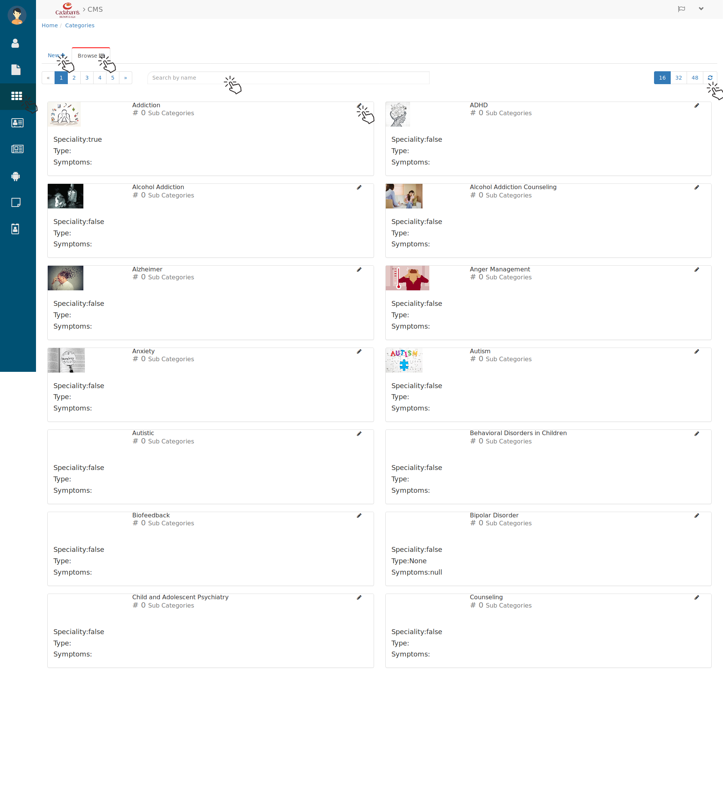
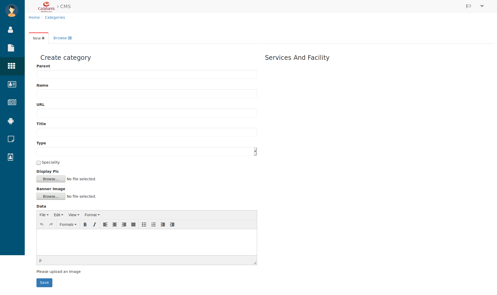
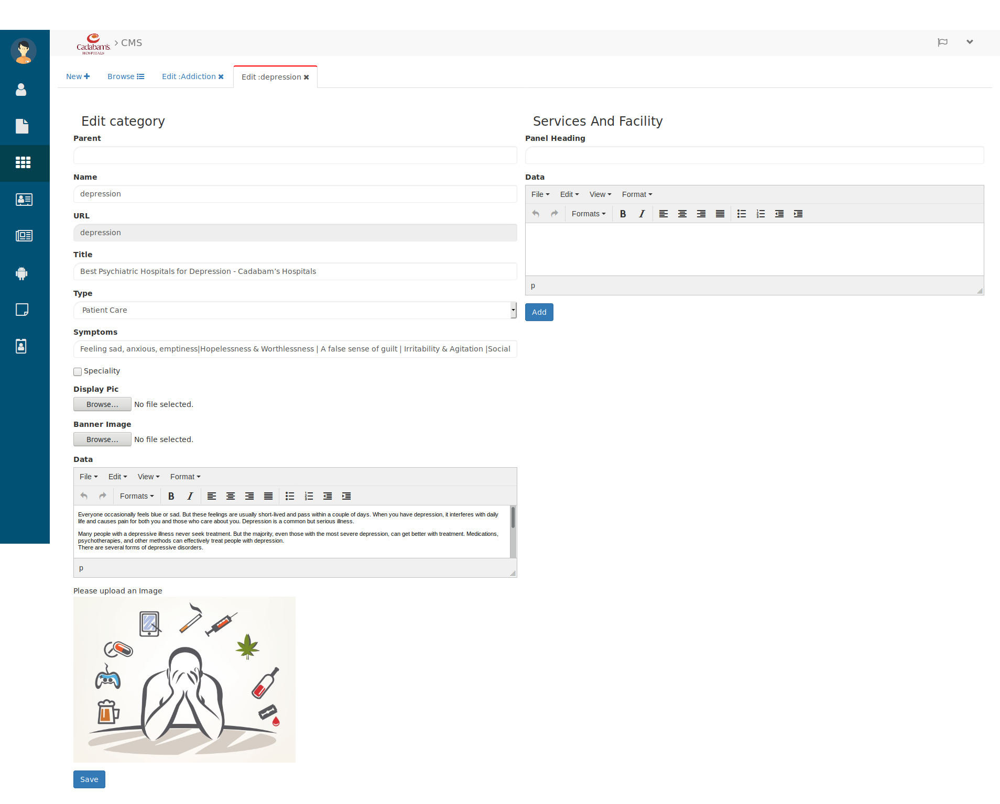

Categories¶
To manage the categories of treatments and disease click on Category icon from menu side bar.

Categories
Here you can know about the categories and you edit them too.
- Search the disease category in search bar by entering their name.
- Use the page and refresh button to browse the categories.
Creating Category¶
- click on New+ to create a new category. by clicking on new you will see below tab.

Create New Category
Here fill the category details like.
- Enter the Parent Category for e.g. Anxiety.
- Then Name of category for e.g. Bipolar Disorder.
- Enter the URL, if no idea leave it, it will be auto generated.
- Then enter the Title of category below that
- Select the Type for e.g. Treatments, Patient Care or None .
- check the checkbox of specialty if it has else leave it unchecked.
- Upload the Display Picture and Banner Image to make it more readable for user/reader.
- Below that write the description about that category in Data rich text field.
- And click on save button and category will be created.
Editing Category¶
To Edit the category click on category’s pencil(Edit) icon then you will see below tab.

Editing Category
Here you can edit their all the details like
- Parent, Name, URL, Title, Type, Symptoms, Specialty, Display pic, Banner Image, Data etc.
- And you can add Services and Facility for that enter the Panel Heading and Data
- then click on Add button and the made changes will be updated in that category.
Let’s see how it looks from user perespective or